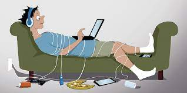
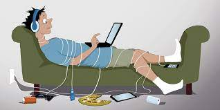

Teknoloji bağımlılığı, başta sosyal medya ve oyun, online alışveriş ve uygulamalarda takıntılı bir şekilde vakit geçirmek ve buna bağlı olarak kişinin kendini sosyal hayattan soyutlamasıdır.
İşte sizlere bulduğum bazı örnekler:
Teknoloji bağımlılığına nasıl karşı gelebiliriz?
Teknoloji bağımlılığına karşı alınabilecek diğer yöntemler:
Bu web sitenin yapımcısının ismi Gökhan Taha AĞPINAR'dır ve kendisi 23 Ağustos 2012 doğumludur. Kendisi Python, HTML ve CSS yazılım dillerini biliyor. Asıl amacı kendi proglamlama dilini oluşturmaktır. Destek için https://github.com/gtaha23 hesabını takip edebilirsiniz.
Dünya'da birçok bağımlılık türleri vardır ve bunlar insan ve çevresine çeşitli zararlar verir. İşte sizlere bazı örnekler:
Burada güncellemeler yayınlanacak. İlerleyen zamanlarda yeniden uğramayı unutmayın!
Bu web sitesi acemi bir şekilde HTML yazılımını kullanmıştır.
Sitedeki Resimler:
 
